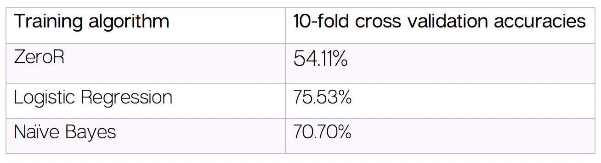
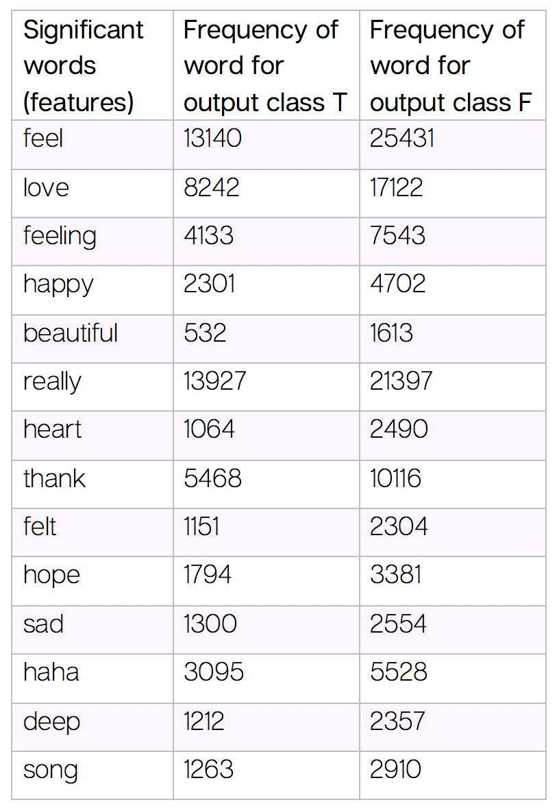
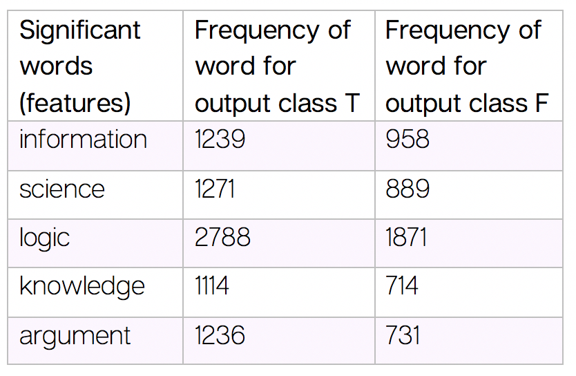

In this project, I use machine learning to analyze the significance of Myers-Briggs personality types in determining the use of language. It is a final project for the class “Machine Learning” at Northwestern University.
My machine learning task was to predict the third dichotomy of the MBTI personality type, “Thinking (T) — Feeling (F)”, given the comments of a user on an online forum.
With the ever-increasing availability of user data on online forums and social media platforms, there is great potential for platforms to learn more about the personality of users through comments and posts. These learnings can be used to better mediate discussion and provide more meaningful content.
I downloaded a dataset from Kaggle containing 8600 examples (rows) in which each row represents a user, containing entries of personality type and their 50 most recent comments on an online forum called PersonalityCafe.com. I used Python code to clean and vectorize the text file using a bag-of-words and tf-idf approach, using packages such as Pandas, re, NLTK, and SciKit. I then trained the model using pre-implemented Logistic Regression and Naive Bayes algorithms, and performed feature selection based on correlation and information gain, all in the Weka software.
The trained model can predict whether a user has personality dichotomy “Thinking” or “Feeling” with 75.53% accuracy using Logistic Regression and 70.70% accuracy using Naive Bayes. These are great accuracies considering that the baseline prediction rate calculated using ZeroR is 54.11%.
The primary insights of the research are the frequency of words found for the words ranked highly in feature selection. In the two tables below you can see the words that are strong predictors for the “Feeling” and “Thinking” dichotomies respectively. It is amazing to see that the following words, which are less explicitly related to the “feeling” dichotomy but still related to it, are predictors of the dichotomy: love, beautiful, really, heart, thank, hope, haha and song. You can find the complete report here.
 There needs to be more data collection efforts that bring together language and personality types, as larger datasets would accommodate more nuanced analyses of language for all dichotomies. This could be done through social media and discussion platforms.
The project helped me develop a strong grasp on implementing Python code and libraries for text analysis. It also taught me how to evaluate different machine learning techniques and select the right one for any task. Going forward, I am excited to learn about more advanced algorithms such as neural networks and use my knowledge to design new technology that can enhance the human experience in any way possible.